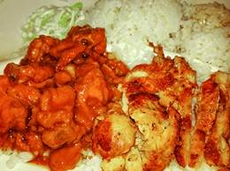
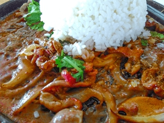
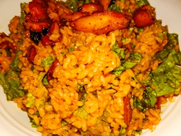
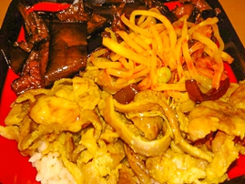

作为大黑山脚下的软件学院，学长在这里保证，软件学院的食堂绝对是方圆一公里之内吃饭的最好去处。
软件学院的食堂分为三层，一楼是家常菜，上至蛋奶鱼肉，下至瓜果蔬菜 一应俱全。一楼的汉堡炸鸡店、烤冷面店和淘太郎饼点是同学们晚上回寝室路上加油的最好去处。除此之外食堂一楼还有水果店和卖水的摊位，所有店铺均可刷校园卡消费。
（消费指南：早餐5元，中餐9元 ，晚餐9元）
食堂二楼为各式各样的快餐，土耳其烤肉，黄焖鸡米饭，中式快餐，满口小笼包、正宗山东大煎饼，韩国料理，凉皮拌面，粗粮面，日式浇饭，台式炸鸡饭，砂锅饭，干锅饭，拉面大全，特色小锅仔，铁板饭，韩式石锅拌饭，沙拉鸡排饭，米线，麻辣烫 ，冷面，快聚客快餐店，香河肉饼店，牛肉汤。种类丰富，样式齐全，没有个一两个月肯定是吃不遍的，并没有新生们想象的那么荒凉。
二楼不供应早餐，只供应中晚餐。（消费指南：中餐10元 晚餐 10元）。
食堂三楼为饭店模式的消费方式，可以点菜，菜品价格良心，种类丰富。
设施方面，食堂一楼和三楼有POS机。一楼卖水处可以开票。下面附上食堂二楼的些许美食图片~仅供参考
  